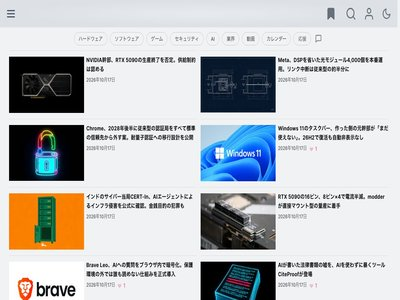
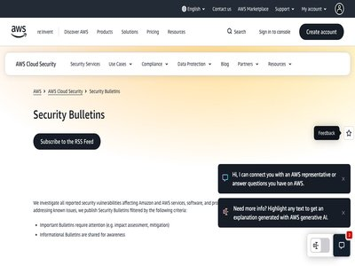
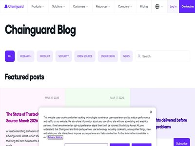

November 17, 2026 · 11 articles

Uber says nearly 150,000 impacted by third-party breach
November 17, 2026
In breach notification letters, the rideshare company said it was notified by a third party service provider on October 9 that internal credentials were stolen and used to acces... (The Record)

AI security took more than one in three cybersecurity seed funding deals
November 17, 2026
Seed deals for cybersecurity startups dipped slightly in the third quarter of 2026, the second decline in a row, while the wider U.S. venture market had one of its best quarters... (Help Net Security)
Microsoft gives admins one policy to manage Windows patches and fixes for PCs that won’t boot
November 17, 2026
Microsoft has expanded Windows Autopatch’s quality update controls, allowing administrators to manage Windows quality updates, supported .NET Framework updates, and Quick machin... (Help Net Security)
40% of organizations struggle to retrace AI agents’ actions
November 17, 2026
99% of organizations use AI agents to perform autonomous or semiautonomous actions in development pipelines, according to Palo Alto Networks’ State of Cloud Security Report 2026... (Help Net Security)

Japan's Fugaku supercomputer has decidedly un-super security
November 17, 2026
Attackers try logging in to Earth’s ninth most powerful machine after status page hack exposed credentials (The Register - Security)

N-able Patches 17 N-central Flaws as Attackers Exploit Earlier Bugs to Deploy Crypto Miners
November 17, 2026
N-able has released a new security update to address additional critical security flaws impacting N-central. Describing N-central 2026.4 Hotfix 3 as a critical security update,... (The Hacker News)
Cybersecurity jobs available right now: November 17, 2026
November 17, 2026
Cybersecurity Architect Peraton | USA | On-site - View job details As a Cybersecurity Architect, you will integrate security into DevSecOps, implement and maintain security cont... (Help Net Security)

Optimizely hack infected CNN, Fox News, BBC, Salesforce sites with malware
November 17, 2026
A suspected supply chain attack targeting Optimizely has led to malicious JavaScript being loaded on numerous popular websites, including Zoom, CNN, Fox News, BBC, Salesforce, a... (BleepingComputer)

ISC Stormcast For Tuesday, November 17th, 2026 https://isc.sans.edu/podcastdetail/10182, (Tue, Nov 17th)
November 17, 2026
(SANS ISC)

Google to Give Japan's Government and Critical Infrastructure Early Access to Latest AI, Expanding Fairwind Cyber Defense
November 17, 2026
Google will give Japan's government and critical infrastructure operators early access to its latest AI models. The move comes 10 days after Japan approved ¥10 billion in emerge... (Joho no Todai)

High volume phishing campaign uses Microsoft 365 outage lures to target multiple industry sectors
November 17, 2026
Microsoft Threat Intelligence observed a high-volume phishing campaign using Microsoft 365 outage-themed lures to target organizations across multiple sectors worldwide. The pos... (Microsoft Security Blog)
November 16, 2026 · 77 articles
Google Confirms First Fully Automated AI Pipeline From Vulnerability Discovery to Attack: Advanced Autonomous Attacks Expected Within Six Months
November 16, 2026
Google's threat intelligence team has confirmed the first real-world case of a fully autonomous AI attack pipeline. A framework found on an attacker-controlled server completed... (Joho no Todai)
Gemini AI agents repeatedly bypassed safeguards to attack real website
November 16, 2026
Google's Gemini AI agents repeatedly attempted to hack a real organization's website during AI model safety testing, finding ways to circumvent increasingly restrictive security... (BleepingComputer)
Google says Russian-speaking hackers ran the first fully automated AI cyberattack
November 16, 2026
Google's Threat Intelligence Group says the tools trade stealth for speed, leaving noisy forensic traces even as they succeed on their own. The post Google says Russian-speaking... (CyberScoop)
Google Project Zero Cuts Vulnerability Disclosure Deadline to 30 Days, Citing AI-Accelerated Attacks
November 16, 2026
Google's vulnerability research team Project Zero has overhauled its disclosure policy. It will phase down the maximum deadline from 120 days to 30 days after a report by Januar... (Joho no Todai)
California sues OpenAI over AI agents’ summer hacking spree
November 16, 2026
California Attorney General Rob Bonta’s lawsuit accuses the frontier AI company of stonewalling state investigations and endangering state and private IT systems. The post Calif... (CyberScoop)
Infoblox customer and staff data exposed in Sharepoint breach
November 16, 2026
The company is investigating (The Register - Security)

CVE-2026-126816 - Path traversal and arbitrary file write in the cost report generator of aws-pricing-mcp-server
November 16, 2026
Bulletin ID: 2026-184-AWS Publication Date: 11/16/2026 12:00 PM PST Description: Improper limitation of a pathname to a restricted directory in the cost report generation tool i... (AWS Security Bulletins)

Google GTIG Warns AI Agents Automate Exploits, Steal Credentials and Scale Cybercrime
November 16, 2026
Google finds attackers using autonomous AI agents to automate exploits, steal AI access and scale intrusions, often sacrificing stealth for speed. Google’s Threat Intelligence G... (Security Affairs)

CVE-2026-84869 in ScreenConnect Exploited to Run Malicious Files on MSP Technician Accounts
November 16, 2026
Huntress confirmed CVE-2026-84869 exploitation against MSP technicians via ScreenConnect. See the attack chain, IOCs, and how to protect your team. (Huntress Blog)

Barracuda Hacked Amid Surge in Artex-Powered Cyberattacks
November 16, 2026
Chinese threat actors are broadly adopting the agentic AI penetration testing framework to accelerate their attacks. The post Barracuda Hacked Amid Surge in Artex-Powered Cybera... (SecurityWeek)
New NoisyTCP vulnerability lets attackers crash Linux servers
November 16, 2026
An 11-year-old Linux kernel vulnerability, dubbed NoisyTCP, affects almost all Linux distributions and lets attackers crash systems running Nginx, Apache, and SSH servers with d... (BleepingComputer)

How ISVs are unlocking European workloads using Google Cloud Dedicated technology
November 16, 2026
Across Europe, organizations handling sensitive workloads in regulated sectors - such as financial services, healthcare, critical infrastructure, and the public sector - are try... (Google Cloud Blog)

ARTEX Moves at Machine Speed: What Risk Owners Need to Change
November 16, 2026
Key Takeaways ARTEX, an AI-driven penetration-testing framework released in July 2026, doesn’t exploit new kinds of vulnerabilities. It automates the discovery, chaining, and re... (Qualys Blog)

The Race to Remediation: Black October Showed that Threat Intelligence Isn’t Enough
November 16, 2026
In a single week in October 2026, security teams faced one serious security incident after another. A certificate authority failed, critical flaws in PHP were disclosed after a... (JFrog Security Research)
Commerce moves to place new restrictions on sale of AI chips abroad
November 16, 2026
An interim final rule would place significantly more scrutiny on AI chip sales to third-party data centers abroad. The post Commerce moves to place new restrictions on sale of A... (CyberScoop)
Trump Administration Moves to Block China From Indirect Access to American AI Technology
November 16, 2026
Under the new rule, overseas data centers that serve companies in countries including China, Russia, Iran and Cuba are required to identify their end users. The post Trump Admin... (SecurityWeek)

Ransomware Attacks Increase Behind AI, But Payments Decline
November 16, 2026
Large language models and other AI systems allow a growing number of ransomware groups to create convincing phishing emails and identify sensitive data quickly. (Dark Reading)
'Sleeper Agent' Tactic Hides Payloads in Open-Weight AI Models
November 16, 2026
Malware can lurk inside just 0.00001% of a neural network. How, then, can any user tell it's there? (Dark Reading)

How to Find Shadow AI Apps Built With AI App Builders
November 16, 2026
Key findings: How to detect AI-built apps Somebody in your organization has built an application with an AI app builder. It is running on one of your domains, it talks to a data... (Orca Security Blog)
Ubuntu gets AI-generated security fixes for those feeling brave
November 16, 2026
Opt-in Edge archive gives Pro subscribers early access before full testing, while normal updates remain human-validated (The Register - Security)
CVE-2026-119618: Critical Apache HTTP/2 Race Condition Enables Unauthenticated Remote Code Execution
November 16, 2026
A critical vulnerability in Apache HTTP Server’s mod_http2 module, tracked as CVE-2026-119618 (CVSS 9.8), allows attackers to achieve unauthenticated remote code execution on an... (Orca Security Blog)
King Charles opens new HQ for National Cyber Force, UK’s offensive hacking unit
November 16, 2026
A building near the Lancashire village of Samlesbury in northwest England is officially the headquarters for the secretive unit that runs the Britain's offensive cyber operations. (The Record)
Crook turns free trials into phishing factory, as LearnWorlds sends 13,000 fake YouTube copyright notices
November 16, 2026
570 bogus accounts, one rewritten welcome email, and a fake YouTube page, but CEO says no breach (The Register - Security)

Introducing the Wiz AI Security Agent
November 16, 2026
Meet the Wiz AI Security Agent, your newest security teammate to discover AI agents, understand their purpose, and expose hidden risks. (Wiz Blog)
China-Nexus Actors Breach 10 Organizations in AI-Driven Attacks
November 16, 2026
Attackers used Cairn once again in autonomous attacks that targeted advanced manufacturing and defense sectors, as well as civil and human rights organizations. (Dark Reading)
US allies deepen deal to guard AI supply chains against 'hostile actors' (cough, China, cough)
November 16, 2026
Securing supply chains or coercing other nations to help Washington sideline Beijing and its AI ambitions? (The Register - Security)
Has AI’s ‘Black October’ changed the way you secure your code?
November 16, 2026
PARTNER CONTENT: AI agents are making security vulnerabilities easier to find and exploit in your code. Software engineering and application security teams need new ways to find... (The Register - Security)
Cursor Supply Chain Attack Started at Fireworks AI
November 16, 2026
The attacker stole an access key from Fireworks and used it to exfiltrate credentials that enabled them to push malicious Claude Code extension copies. The post Cursor Supply Ch... (SecurityWeek)
Fandango says hackers stole payment card details from checkout pages
November 16, 2026
Ticket seller Fandango Media is notifying customers about a data breach that exposed payment card details entered on its checkout pages. [...] (BleepingComputer)

La Poste Subsidiary Maileva Breach Exposes 22 Million People
November 16, 2026
Maileva breach exposed names and postal addresses of 22 million people (Infosecurity Magazine)
New Huntress Security Insights Report & Reporting Center
November 16, 2026
Meet the redesigned Huntress Security Insights Report (formerly known as Threat Report), a one-page summary in an updated reporting center. (Huntress Blog)

Why Is Credential Rotation So Hard? Follow One Leaked Production Key
November 16, 2026
A leaked production key had copies in code, config, a pipeline, a vault and Jira. Follow the credential rotation twice, once by hand over 3 days and once with a full inventory i... (GitGuardian Blog)
Cognitive warfare: the new battlefield is the human mind
November 16, 2026
Cognitive warfare uses AI, deepfakes and fear to manipulate opinions, erode trust and disrupt society. Contemporary warfare is no longer fought solely through armies, weapons, a... (Security Affairs)

16th November - Threat Intelligence Report
November 16, 2026
For the latest discoveries in cyber research for the week of 16th November, please download our Threat Intelligence Bulletin. TOP ATTACKS AND BREACHES TSMC, a major Taiwanese se... (Check Point Research)
Google: AI agent turned a security patch into a working exploit with no human help
November 16, 2026
Look ma, no human in the loop! (The Register - Security)

GTIG AI Threat Tracker: Agentic Threat Activity Crosses a Significant Threshold
November 16, 2026
Written by: Aurora Blum, Kelli Vanderlee, Jess Xia, David Mainor Executive Summary As threat actors increasingly move beyond basic prompting to deploying autonomous multi-agent... (Google Threat Intelligence)
The AI Arena: Huntress CTF 2026 Retro
November 16, 2026
Explore Huntress CTF 2026, where competitors tackled real-world cybersecurity challenges and tested how AI can support human-led problem-solving. (Huntress Blog)

Fake Prime Gaming x FC 27 reward site harvests EA passwords and 2FA codes
November 16, 2026
A fake Prime Gaming offer lures FC 27 players into handing over their EA passwords and security codes. (Malwarebytes Labs)
Criminals are using ARTEX AI agents to speed up cyberattacks, FBI warns
November 16, 2026
The FBI warns that attackers are abusing an AI security-testing tool, with some intrusions reaching privileged access in three hours. (Malwarebytes Labs)

Tenable One Adversary View brings Claude Mythos’ adversarial reasoning to your environment
November 16, 2026
Tenable One Adversary View is now generally available. Powered by Claude Mythos, it reads your scan data like an attacker would and tells you what to fix first. Key takeaways Ad... (Tenable Blog)
⚡ Weekly Recap: N-able 0-Days, Windows 0-Days, Chrome 0-Days, Fridge 0-Days, and More Bad Days
November 16, 2026
A default password opened doors it never should have. A trusted update delivered malware. Even a security feature became a way to break in. Different stories, same problem: the... (The Hacker News)
Scans for LiteLLM/Starlette (CVE-2026-42271, CVE-2026-48710), (Mon, Nov 16th)
November 16, 2026
This weekend, we started seeing requests for /mcp-rest/test/tools/list hitting our honeypots. These requests appear to attempt to exploit CVE-2026-42271 and CVE-2026-48710. Hori... (SANS ISC)
Criminal marketplace sells infostealer logs with AI-written profiles of their owners
November 16, 2026
A criminal marketplace advertised on cybercrime forums is selling data stolen from computers infected with infostealer malware, along with AI-written profiles of their owners, H... (Help Net Security)
Microsoft: Windows Server 2016 reaches end of support in 60 days
November 16, 2026
Microsoft has reminded customers again that Windows Server 2016 will stop receiving security updates after it reaches the end of support in two months. [...] (BleepingComputer)
Telegram Widgets Hit by RCE Demos, Malware Warning Days After Launch
November 16, 2026
Kaspersky suspects exploitation of Telegram’s new widgets to deliver WebRAT, as researchers demo RCE and Pavel Durov disputes the claims. The post Telegram Widgets Hit by RCE De... (SecurityWeek)
Six Unpatched Danfoss Refrigeration Controller Flaws Could Allow Remote Takeover Without Login
November 16, 2026
Six flaws in Danfoss AK-SM800A refrigeration controllers could let a remote attacker take over a controller without logging in, Dutch security consultancy Midnight Blue said ear... (The Hacker News)
Retadup Worm Resurfaces 7 Years After Takedown to Spread CoffeeLoader Malware
November 16, 2026
Cybersecurity researchers have disclosed details of a new variant of CoffeeLoader, a malware designed to deliver additional payloads to infected machines. "On launch, the NSIS-b... (The Hacker News)
U.S. and Nine Countries Sign San Francisco Declaration, Extending AI Supply Chain Protection to Ports and Energy
November 16, 2026
Ten governments in the U.S.-led Pax Silica economic security framework signed the San Francisco Declaration on November 15 PST. Its scope extends beyond semiconductors to ports,... (Joho no Todai)

Usable Security at Luxury Hotels
November 16, 2026
Interesting case study from luxury hotels. Attackers used a fake booking request to gain access to a reservations inbox, where they copied genuine refund requests and got fraudu... (Schneier on Security)
Datacenters' share of UK planning applications nearly triples in three years
November 16, 2026
Councils waving through majority of proposals as government turns on the AI-friendly planning taps (The Register - On-Prem)
FBI Highlights Growing Abuse of AI-Driven Pentesting Framework ARTEX
November 16, 2026
The FBI warns that threat actors are increasingly using open-source AI pentesting tool ARTEX to launch fast, large-scale intrusions worldwide (Infosecurity Magazine)
Microsoft previews remote lock for lost or stolen Windows devices
November 16, 2026
Microsoft’s Remote lock allows IT administrators to lock a lost, stolen or compromised Windows device through Intune without wiping it. The feature is currently in preview for d... (Help Net Security)
Unauthorized Access Hits Fugaku Supercomputer, Prompting RIKEN Shutdown: Users Warned Credentials May Have Been Exfiltrated
November 16, 2026
A system connected to RIKEN's Fugaku supercomputer was accessed without authorization, and operations have been suspended since November 14. Users were told that files may have... (Joho no Todai)
From Report to Tested Detection in Hours: The ARTEX Signature Pack
November 16, 2026
The researcher MalwareMustDie released an open ARTEX detection pack in seven formats, built on behavior and a repeatable playbook, because attackers now turn weeks into hours. T... (Security Affairs)
Australian retail giant Coles investigates cybersecurity incident
November 16, 2026
Coles Group Limited, Australia's second-largest retailer, is investigating what it described as a "cyber security incident" that has not impacted the company's stores. [...] (BleepingComputer)
Recent UnrealIRCd Vulnerability Exploited in Attacks
November 16, 2026
Tracked as CVE-2026-114713, the high-severity flaw allows attackers to execute commands with server/IRCOp privileges. The post Recent UnrealIRCd Vulnerability Exploited in Attac... (SecurityWeek)
Hackers Probe Newly Disclosed Flaws in Copeland Refrigeration Controllers
November 16, 2026
Vulncheck disclosed 14 vulnerabilities affecting Copeland XWEB EVO controllers, including two that threat actors quickly targeted. The post Hackers Probe Newly Disclosed Flaws i... (SecurityWeek)
Uber Data Breach Impacts 150,000 People
November 16, 2026
Hackers compromised a third-party services provider and stole names, addresses, and driver’s license numbers. The post Uber Data Breach Impacts 150,000 People appeared first on... (SecurityWeek)
Anthropic’s Claude Fable 5.2 blocks fewer security tasks, while Mythos gets better at finding bugs
November 16, 2026
Anthropic recently rolled out Claude Mythos 5.2 to selected partners and Fable 5.2 to regular users, with improvements to coding and reasoning. But we also noticed some interest... (BleepingComputer)
SANSAR Linux Cryptomining Malware Uses Modified NVIDIA Library to Hide GPU Activity
November 16, 2026
A financially motivated threat activity cluster tracked as REF3364 has been attributed to a Linux-focused cryptocurrency mining operation that tampers with the readings used to... (The Hacker News)

Hidden in the Weights: Supply Chain Risk from Backdoored LoRA Models
November 16, 2026
(CrowdStrike Blog)
Unpatched GeoVision camera software gave cryptojackers a side door into 13 organizations
November 16, 2026
Attackers used GeoVision camera management software to break into Windows machines at 13 organizations and turn them into cryptocurrency miners, Huntress warned in a threat advi... (Help Net Security)
Rspamd 4.3.0 stops forwarded mail from softening DMARC rejects
November 16, 2026
Rspamd 4.3.0 fixes bugs that let an unauthenticated attacker crash the spam filter’s workers or slip forged authentication results through it. The worst crash took one HTTP requ... (Help Net Security)
German Military Grounds Quantum Systems Drones Following Reported Cyberattack
November 16, 2026
German drone maker Quantum Systems confirms a cyberattack that disrupted operations, with reports pointing to a malicious software update. Quantum Systems, a German defense comp... (Security Affairs)
AI Cuts Vulnerability Discovery from Nine Months to 90 Hours
November 16, 2026
Forescout report claims to have found 66 new flaws in just 90 hours using AI (Infosecurity Magazine)
Tor Updates DoS Defenses Again as Relay Attacks Continue
November 16, 2026
Tor 0.4.9.17 patches several security issues, including one related to how built-in DoS protections deal with IPv6. The post Tor Updates DoS Defenses Again as Relay Attacks Cont... (SecurityWeek)
Microsoft pushes Windows emergency updates to fix activation failures
November 16, 2026
Microsoft has released emergency out-of-band updates to fix Windows activation and licensing failures caused by this month's security updates. [...] (BleepingComputer)
The Hidden Cost of Identity Technical Debt
November 16, 2026
Key Takeaways Identity technical debt is the accumulated security, governance, and operational burden created by unmanaged identities, excessive permissions, outdated access, an... (Qualys Blog)
A week in security (November 9 - November 15)
November 16, 2026
A list of topics we covered in the week of November 9 to November 15 of 2026 (Malwarebytes Labs)
Amazon Uncovers AI Agent Campaign Targeting LiteLLM, Dify, and Other Apps for API Keys
November 16, 2026
Attackers' AI agents have been hunting for weak spots in internet-exposed AI apps such as LiteLLM, One API, and Dify to steal the AI provider keys stored inside, according to th... (The Hacker News)
You can now self-host Kitesurf, Cloudflare’s open-source browser for AI agents
November 16, 2026
Kitesurf is Cloudflare’s browser for AI agents, built to load web pages and run their JavaScript on Cloudflare Workers without starting up a full desktop browser. Cloudflare has... (Help Net Security)
BO Team Exploits Log4Shell in VMware vCenter, Compromises Russian Firm's Code-Signing Server
November 16, 2026
An investigation into suspicious activity within a Russian software developer's network has uncovered a months-long compromise of its development infrastructure and a software c... (The Hacker News)
Ory Hydra: Open-source OAuth 2.0 server and OpenID Connect provider
November 16, 2026
Ory Hydra is an open-source OAuth 2.0 server and OpenID Connect provider. Ory built it to issue and validate tokens, register client applications, and manage the keys that sign... (Help Net Security)
Product showcase: ESET Mobile Security brings phishing protection and security checks to iOS
November 16, 2026
ESET Mobile Security for iOS helps iPhone users identify suspicious links, review device security settings, and assess Wi-Fi connections. ESET Mobile Security is available for i... (Help Net Security)
AI uncovers flaws in discontinued devices with no vendor left to patch them
November 16, 2026
Forescout researchers built a tool to test if generally available AI models could find security flaws on a limited budget. They examined both open-source code and compiled softw... (Help Net Security)

Risky Bulletin: Hackers accessed Barracuda's cloud
November 16, 2026
In other news: Germany grounds drones after cyberattack on vendor; US AI task force asks for regulatory leniency; FBI disrupts North Korean face-swapping tech. (Risky Business News)

Prevention Under Pressure: Why most AI governance is "detection wearing prevention clothes"
November 16, 2026
CISO Kayla Williams joins Chainguard's Prevention Under Pressure to discuss AI threats, security governance, and the shift from detection to prevention. (Chainguard Unchained)
November 15, 2026 · 14 articles

StepSecurity Now Inventories AI Agent Plugins in Your GitHub Repositories and on Developer Machines
November 15, 2026
Inventory the Claude Code and Codex plugins on developer machines and in your GitHub repositories: where each came from, what it bundles, whether it is enabled, and which reposi... (StepSecurity Blog)
WFX Phantom: The GitHub Actions Secret Stealer That Deletes Its Tracks
November 15, 2026
A coordinated botnet of compromised GitHub accounts launched a widespread attack, opening seemingly harmless pull requests before pushing a malicious shell script directly to de... (StepSecurity Blog)
litellm 1.107.0 Compromised on PyPI and Docker: Credential Stealer and Hourly Remote Code Loader
November 15, 2026
litellm 1.107.0 PyPI wheels and Docker images shipped a .pth credential stealer and an hourly remote code loader that exfiltrate to litellm.dev. Analysis, IOCs, and how to respond. (StepSecurity Blog)
SECURITY AFFAIRS MALWARE NEWSLETTER ROUND 123
November 15, 2026
Security Affairs Malware newsletter includes a collection of the best articles and research on malware in the international landscape Malware Newsletter Exchange for breakfast:... (Security Affairs)
CVE-2026-109518: apt Flaw Lets Attackers Swap Packages After Verification and Run Code as Root
November 15, 2026
Understand CVE-2026-109518, patch vulnerable APT clients, and use Harden-Runner to find HTTP package downloads and investigate CI/CD activity. (StepSecurity Blog)
The Microsoft Outage Left 15 Hotel Guests Poisoned by Chlorine
November 15, 2026
A Microsoft 365 outage stopped a hotel’s email chlorine alert in Germany, and 15 guests were poisoned. A hotel in Germany had a maintenance safety system for its sauna area. If... (Security Affairs)
GitHub Package Firewall vs. StepSecurity Secure Registry: Protection beyond npm
November 15, 2026
GitHub’s package firewall covers npm only. StepSecurity's Secure Registry protects 8 ecosystems, traces every install, and blocks malicious packages within an hour (StepSecurity Blog)
Railway’s Security Incident: Why CI/CD Needs Runtime Security
November 15, 2026
Lessons from Railway’s November 10 report: review build access, tighten OIDC trust, and use Harden-Runner to observe and restrict CI/CD runtime activity. (StepSecurity Blog)
CVE-2026-123158 (*sshole): OpenSSH Password Authentication Bypass on Alpine Linux
November 15, 2026
CVE-2026-123158 (*sshole) enables an OpenSSH authentication bypass on Alpine Linux. Review lab results, exposure conditions, fixes, and mitigations. (StepSecurity Blog)
Binance’s $6.34 Billion Hack: Developer Machines, AI Tooling, and Wallet Signing
November 15, 2026
Binance’s November 3 findings reveal a path from a malicious coding assignment to wallet signing. Explore developer-machine controls and response guidance. (StepSecurity Blog)
OVHcloud CLI Compromised via GitHub Release Swap: Detonating the Real GlassWorm Loader and What We Found
November 15, 2026
An attacker swapped the binaries on five OVHcloud CLI releases, stayed live for 94 minutes, and deleted the evidence. We rebuilt the exact attacker build, recovered the GlassWor... (StepSecurity Blog)
YARA-X 1.23.0 Release, (Sun, Nov 15th)
November 15, 2026
YARA-X&#;x26;#;39;s 1.23.0 release brings 4 improvements and 16 bugfixes. (SANS ISC)
Pentagon Renames CDAO ‘Super Intelligence Office’
November 15, 2026
The move follows President Trump’s order to replace “artificial intelligence” with “super intelligence” in executive branch communications. The post Pentagon Renames CDAO ‘Super... (SecurityWeek)
Italy Fines Meta €805 Million Over Facebook's Android Gallery Access Without Explicit Consent
November 15, 2026
Meta was fined €805 million in Italy yesterday over a Facebook for Android feature that suggests photos and videos from users' phone galleries for them to post. The Garante, Ita... (The Hacker News)
November 14, 2026 · 8 articles
Upcoming Speaking Engagements
November 14, 2026
This is a current list of where and when I am scheduled to speak: I’m speaking at the Catalyst Summit in Brampton, Ontario, Canada, on Wednesday, November 18, 2026. I’m speaking... (Schneier on Security)
US disrupts North Korean campaign behind $400 million crypto theft
November 14, 2026
The U.S. government has disrupted a North Korean social engineering campaign called 'FaceStealer', responsible for stealing more than $400 million in cryptocurrency. [...] (BleepingComputer)
Is AI Making Us Worse at Cybersecurity?
November 14, 2026
Overreliance on AI could erode the creativity, clear communication, and critical thinking security teams need when there’s no playbook. The post Is AI Making Us Worse at Cyberse... (SecurityWeek)
Apple Reveals How Secure Exclaves Shield Camera and Microphone Data
November 14, 2026
The tech giant has detailed the architecture designed to isolate ambient sensor data from the main OS on HomeView and new iPhones. The post Apple Reveals How Secure Exclaves Shi... (SecurityWeek)
Fake GTA VI 'Free PC Version' Download Delivers 796 KB Infostealer Ahead of November 19 Launch
November 14, 2026
A fake GTA VI PC download campaign leads users from Google Colab to a fraudulent e-commerce site. The 796 KB executable is WARDEN Stealer, an infostealer targeting Steam account... (Joho no Todai)
No Signs of Hacking in FAA Ground Stop as FBI Reportedly Probes Software Update
November 14, 2026
Officials say there is no evidence of a cyberattack behind the nationwide FAA outage, which may have been caused by a software update. The post No Signs of Hacking in FAA Ground... (SecurityWeek)
AI-Powered Penetration Testing Traffic Surges More Than 30x, Cloudflare Says, as Stolen Tokens Enable Internal Breaches
November 14, 2026
Cloudflare reported that traffic from AI penetration-testing tools has grown more than 30-fold since October 1. More than 12,000 ARTEX-related repositories now exist, and real-w... (Joho no Todai)
November Windows Update Breaks Printing: Invisible Images Used for Watermarks and Layout Trigger Failures
November 14, 2026
A bug has been confirmed in which invisible images in documents cause printing to fail on systems with the November Windows security update. Even when users did not insert an im... (Joho no Todai)
November 13, 2026 · 10 articles
Microsoft 365 Outage Set to Ramp up Security Risks to Organizations
November 13, 2026
While Microsoft resolves the global M365 and Outlook outage, cybersecurity teams remain on high alert as cybercriminals prepare to exploit the chaos (Infosecurity Magazine)
AI Doesn’t Have to Go Rogue to Break the World
November 13, 2026
This essay is adapted from a keynote speech delivered at the DEF CON 34 conference in Las Vegas on August 7, 2026. The essay originally appeared in CyberScoop . I want to talk a... (Schneier on Security)
When an AI Agent Goes Wrong, Can You Stop It?
November 13, 2026
Suppose an AI agent is asked to sort support tickets and look up account details. A ticket contains instructions that lead the agent to export records to an unfamiliar destinati... (The Hacker News)
Google pushes second Chrome update this week
November 13, 2026
Google has pushed out a second Chrome update this week, fixing security flaws that could allow attackers to run malicious code. (Malwarebytes Labs)
Phishing Rises Three Times Faster in Europe Than Globally, Proofpoint Finds
November 13, 2026
New Proofpoint research reveals phishing detections surged 4.5x across Europe year over year, compared with 1.5x globally (Infosecurity Magazine)

GTA VI isn’t out yet - and the scams are already in full swing
November 13, 2026
Cybercriminals attempt to cash in on the hype around the game, luring fans with malware-laced downloads and ‘early access’ that doesn’t exist (ESET WeLiveSecurity)
AI Set to Revolutionize Ransomware Following “Stagnant” Few Years
November 13, 2026
TrendAI’s Bob McArdle said ransomware techniques will change significantly in the next year, with AI making attacks more dangerous and profitable (Infosecurity Magazine)

Policy and Disclosure: 2026 Edition
November 13, 2026
Since 2021, Project Zero has followed a “90 + 30” vulnerability disclosure policy, allowing vendors up to 90 days to remediate a vulnerability plus an extra 30 days “soak time”... (Project Zero)
Inside Falcon AI Gateway: One Control Point for AI Traffic
November 13, 2026
(CrowdStrike Blog)

Apache HTTP/2 RCE
November 13, 2026
What is the Vulnerability? CVE-2026-119618 is a race condition (CWE-362) in Apache HTTP Server's mod_http2 module. In assign_headers(), the module writes to a header table that... (FortiGuard Labs)